Art trials
Trial art next to what the game uses today. Pick what reads best; nothing on this page is installed until you choose.
Own art for four hand-made groups (batch 125 pilot)
Each technique group gets its own version of the stock effects it used: old on the left, new on the right (close-up of the new one beside it). Not in the game until you say so.
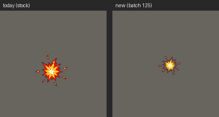
Heat of a kick bursting where the heel lands. Note: it came out round, close to the old design, not the lopsided burst asked for.
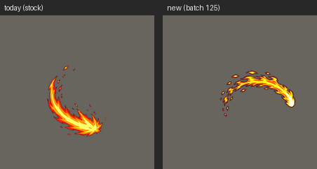
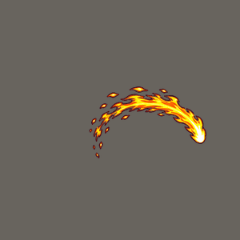
The fire arc a sweeping leg leaves.
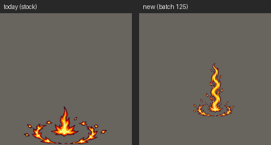
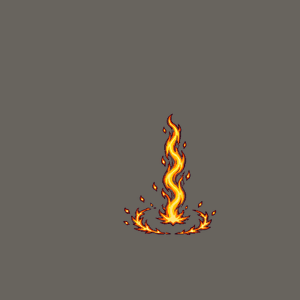
Heat climbing the leg.
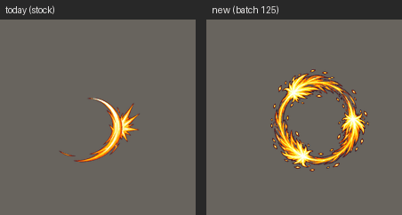
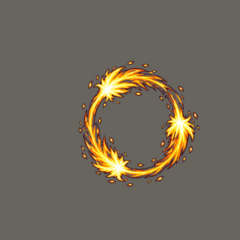
A spinning wheel of fiery kicks.
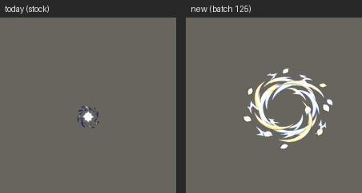
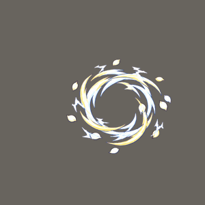
Threads and petals wheeling round the head (light art, tinted in game).
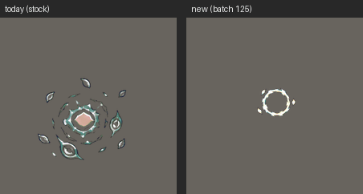
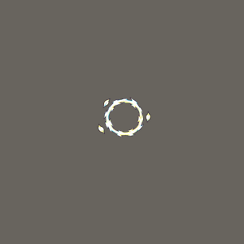
Thread ripples spreading out.
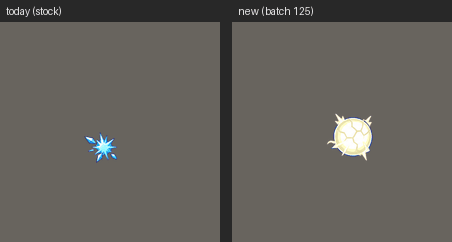
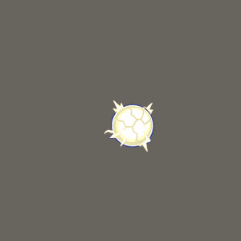
A glowing thought cracking apart (Broken Mind).
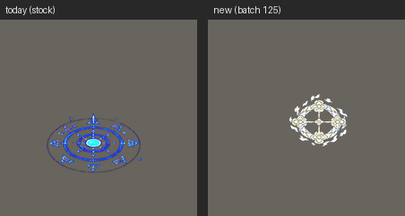
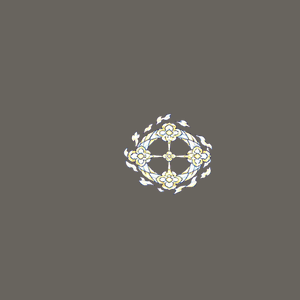
A binding circle woven from thread.
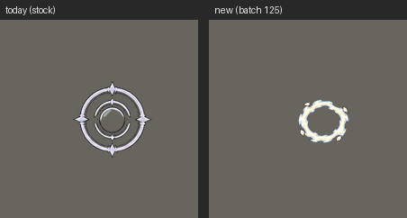
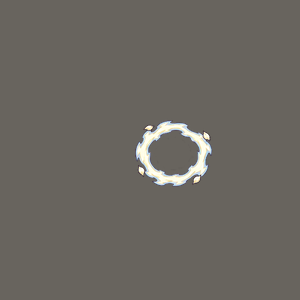
A calm pulse of the mind (Mind Pulse).
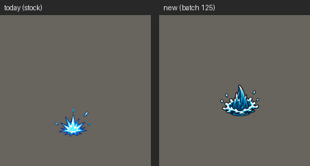
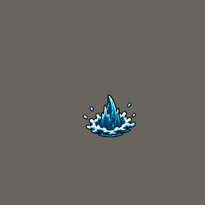
A sea splash with fin-tipped spray.
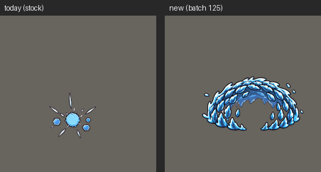
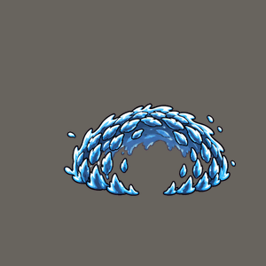
Shark-skin scale shell in place of the hexagon shield (Shark Skin).
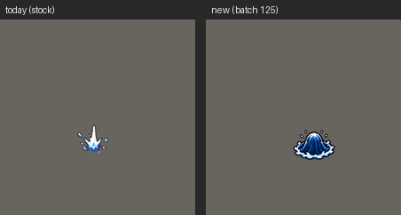
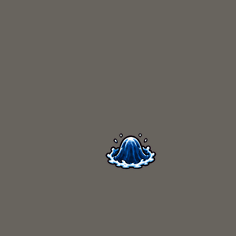
A heavy charge of deep water landing (Depth Charge, Killing Depths).
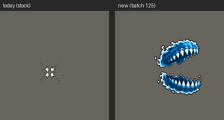
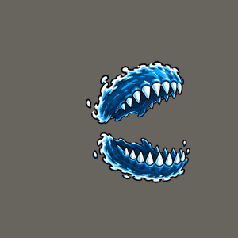
Jaws of water snapping shut.
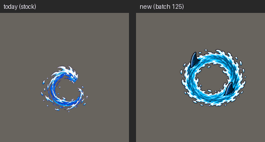
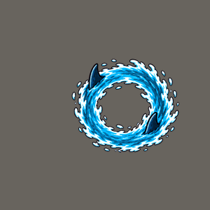
A circling current with two fins (Shark Wall, Shark Frenzy).
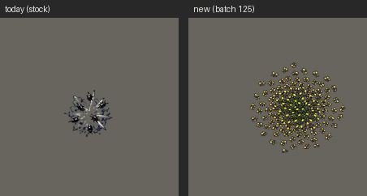
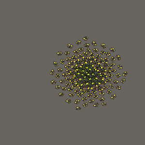
A swarm made only of beetles, no grey smoke.
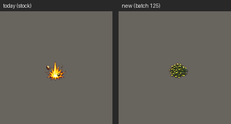
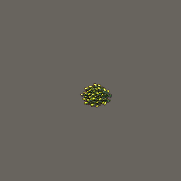
A beetle mass slamming down and scattering.
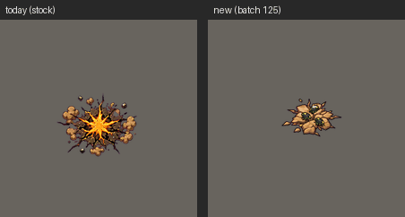
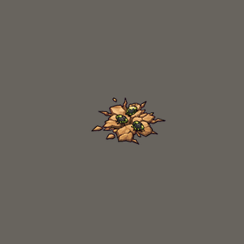
Beetles boiling out of cracks round the feet.
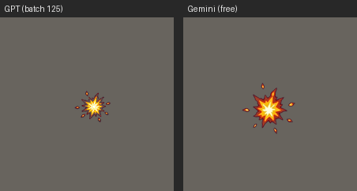
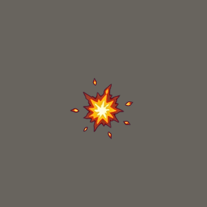
The same brief: GPT (paid, installed), Gemini (free) and FLUX 3 Image Klein in ComfyUI on your PC (free, 17 s); the close-up is ComfyUI's. All three drew a round burst.
Great Fireball: still core, travel dart, impact flash (batch 124)
After the pixel-art reference video: the round body stays identical in every frame and only the flames and embers move; a small stretched dart for the flight; a short hard flash at contact before the dome of fire. Each option flies across the stone floor at game speed (left) and loops in close-up (right). Nothing here is in the game yet.
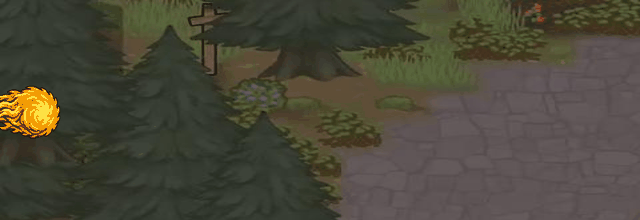
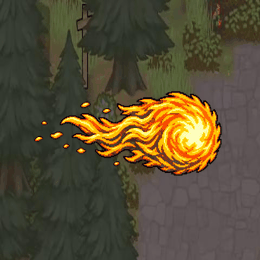
What the game draws now. The swirl inside the ball is redrawn every frame.
Same art, no new batch: frame 1's round body is copied into the other three, so only the flames move.
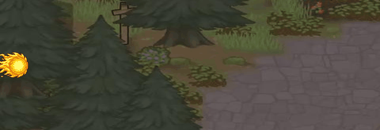
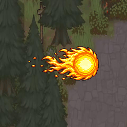
Batch 124: twice the frames, flames curl and embers peel away; the painter kept the core almost the same.
B with the core made exactly identical in all eight frames.

C for the first moment, then the small white-hot dart carries it, then the star flash and today's dome of fire.
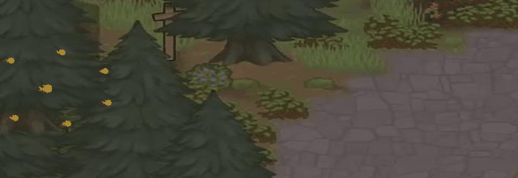
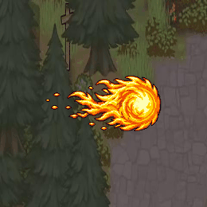
Flame gathers in at the mouth while the ball swells, C's full fireball for the whole flight with today's swirling orange fire set inside its bright centre, D's star flash at contact, then the dome of fire.